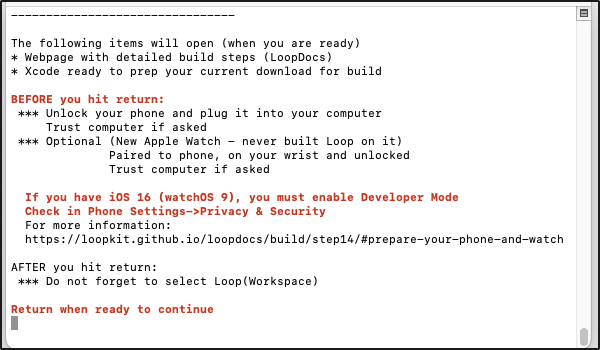
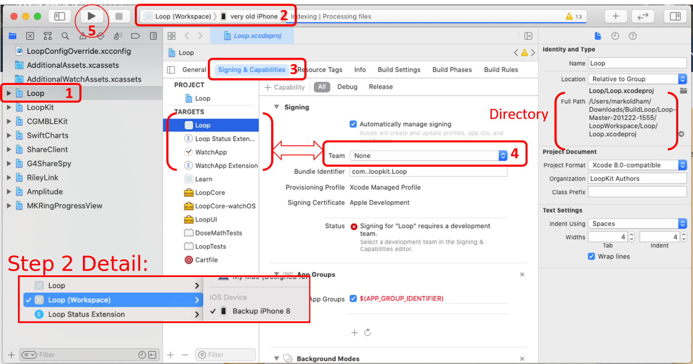
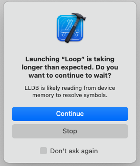

Build Loop App
Build the Loop App¶
Summary¶
Time Estimate
- 60-80 minutes for first time builders
- 10-15 minutes for repeat builders
Summary
You will:
- Enable Developer Mode for iOS 16, watchOS 9
- Run the Build Select Script to download Loop code
- Prepare to build the Loop app
- Press the Xcode Build Button to build Loop
- Watch in awe as you build your very own Loop app
FAQs
The FAQs for building Loop are in-line with the steps that trigger the questions.
Build Video¶
The Loop and Learn team prepared this YouTube video showing how to build Loop Master. We recommend reading the written directions below before (and while) watching the video.
This video starts with the steps for updating Loop. If this is your first time building, pay attention to what you'll need to do in about a year. The part you'll need to do today (open the terminal to start downloading Loop) is about 3 minutes into the video.
Developer Mode¶
If you are running iOS 15 or watchOS 8 and earlier, you do not have developer mode and can skip ahead to Download Loop.
New with iOS 16 and watchOS 9, you must enable Developer Mode to run or build Loop. (This is true for any app created by Xcode.) If you want to know more, click on this Apple Link about Developer Mode.
Loop will not run until you enable Developer Mode for iOS 16.
Prepare your Phone and Watch¶
-
If you are running Loop and update to iOS 16 and watchOS 9; Loop will no longer run until you enable Developer Mode. You will see a message similar to the next graphic
-
If you are building to a new phone - you may need to connect the device to Xcode and trust the computer before the developer mode will be available.
-
If you are building to a new Apple Watch - you may need to build the app with Xcode to a phone paired with the watch before the developer mode will be available.

If your phone uses iOS 16 and you do not enable Developer Mode; that phone shows up as an "Unavailable Device" under Xcode

Developer Mode on iOS 16 Device¶
To determine if Developer Mode is enabled, go into your phone settings, choose Privacy & Security, scroll to the bottom of the screen and tap on the Developer Mode row and examine the Developer Mode slider.
- If Developer Mode does not show up under Privacy & Security in your phone settings, wait until told to plug the phone, Trust the computer and then look for Developer Mode once connected to Xcode
- If Developer Mode is enabled, the slider will be green and no further action is required
- If Developer Mode is not enabled, the slider will be blank
- Move the slider so it is green
- Reboot the device when asked
- After the reboot, you will be asked if you want to turn on Developer mode
- Tap on the
Turn Onoption
Developer Mode on watchOS 9 Device¶
Build, Enable, Build
Reports from users indicate that when you are building to a new Apple Watch - you must first build the app with Xcode before the developer mode will be available. So plan to build with Watch paired, and then enable Developer Mode and build again.
This must be configured on the watch itself (not the watch app on the iPhone). To determine if Developer Mode is enabled, look at the watch face icons and find the Settings icon. Tap on it and scroll to and tap the Privacy & Security icon. Then scroll to the bottom and tap on Developer Mode.
- If Developer Mode is enabled, the slider will be green and no further action is required
- If Developer Mode is not enabled, the slider will be blank
- Move the slider so it is green
- Reboot the device when asked
- After the reboot, if you are asked if you want to turn on Developer mode
- Tap on the
Turn Onoption
Download Loop¶
This page has the detailed steps to run the Build Select Script to download the Loop code, prepare your computer and build Loop Master.
Ensure a Year¶
Rebuild / Update on Same Computer?
If you used this same computer to build Loop previously and you did not delete provisioning profiles as instructed on the Updating/Rebuilding page - you will not get a full year with the app.
Go to Updating: Delete Provisioning Profiles now and do that step if you missed it.
Build Select Script¶
These instructions show each step needed to download Loop using the Build Select script.
Optional
The Build Select Script can also be used to build a companion app, called Loop Follow, or a fork of Loop, called FreeAPS. Follow these links to different websites for more information about those apps.
- Information about Loop Follow
- Information specific to FreeAPS
You do not need to know about these apps to build the released version of Loop.
Open Terminal¶
Go to the Finder app, click on Applications, then open the Utilities folder. Locate the Terminal app and double-click Terminal to open a terminal window. The terminal window is very plain looking when you open it. That is normal.
Copy the line below that starts with /bin/bash by hovering the mouse near the bottom right side of the text and clicking the copy icon (should say Copy to Clipboard when you hover over it). When you click the icon, a message that says “Copied to Clipboard” will appear on your screen.
/bin/bash -c "$(curl -fsSL https://raw.githubusercontent.com/loopnlearn/LoopBuildScripts/main/BuildLoop.sh)"
Paste the line of text into Terminal. Be sure to click anywhere in the terminal before trying to paste. (Ways to paste: CMD-V; or CNTL-click and select from menu or Edit-Paste at top of Mac screen.) Once the line is pasted, hit return to execute the script.
Read the screen (shown below). Type 1 and return if you understand the warning and agree.

- Please read what is on the screen as you progress.
- Adjust font size as directed if you have difficulty seeing the directions.
You must type 1 (as shown in the graphic above) and return to indicate you understand the warning.
Next you will see an introduction to the Build Select script. Please read this. To build Loop, you will select the Build Loop option by typing 1 (as shown in the graphic below) and return.

Next you are asked which version of Loop you would like to build. Type 1 and return to build Loop (as shown in the graphic below) or 2 for the FreeAPS fork of Loop.

XCode Errors with Build Select¶
WARNINGS
If you see errors like these . . .
xcrun: error: invalid active developer path (/Library/Developer/CommandLineTools), missing xcrun at: /Library/Developer/CommandLineTools/usr/bin/xcrunxcode-select: Failed to locate 'git', requesting installation of command line developer toolsxcode-select: error: tool 'xed' requires Xcode
You missed one of these steps:
Wait for Download to Complete¶
This download can take from 3 minutes to 30 minutes depending on your download speed. You can leave the room and return later to check on progress. When you read the words in the terminal, as the script runs, you may see terminology you do not understand - don't worry - you do not need to understand enumeration or submodule or cloning. You only need to review the display to look for any error messages.
The next graphic shows terminal messages for the beginning of a successful download.

When the download completes, the "Check for successful download" message is displayed. You will need to scroll up in the terminal window to look through all the messages output to the terminal from the beginning of the download.

If you do not find the word error in your terminal window, continue with Download was Successful.
If you see the word "error" in your terminal window:
- Read the error message
- Try to figure out the problem
- If you need help, reach out to your favorite Loop Social Media site
- Tap any key other than 1, followed by return to cancel
Download was Successful¶
Once you confirm there were no errors, the script continues as shown in the graphic below:

- Make sure your phone is unlocked and plugged into the computer
- Hit return when ready to continue
The final messages (not shown) inform you that you can rerun the script with an up-arrow / return, close the terminal window and provides an optional command to configure the terminal to be in the LoopWorkspace folder for the downloaded code.
- Wait until you've successfully built the app before closing the terminal
- The command of the form:
cd /<specific-to-you-and-your-computer>/Downloads/BuildLoop/<download-folder-name>/LoopWorkspacecan be useful for some specific actions; most people will not need this.
Prepare to Build¶
New builders should skip ahead to Select the Loop Folder and follow the detailed steps.
Summary Graphic¶
Experienced Builders
Experienced builders can choose to follow the abbreviated build instructions instead.
The Loop and Learn abbreviated Build Instructions is automatically opened by the Build Select script
Rearrange screens so you can see the webpage and Xcode.

Select the Loop Folder¶
Don't touch that button!
You will be told exactly where on each screen you should click. Please only click in the designated places.
Follow the directions and compare your Xcode screen to the graphics as you walk through the steps.
As shown in the GIF below:
- Frame 1: This is what the Xcode screen looks the very first time it is opened after a fresh download
- You need to click on the indicated Loop folder icon two times
- Frame 2: After the 2 clicks, the middle pane of the Xcode window is populated as shown

Select Loop (Workspace) and Your Phone¶
If this is the First Time your phone or watch has been connected to Xcode, you will need to tell the phone and watch to "Trust this Computer".
The GIF below shows:
- Frame 1: Same as end of previous GIF
- There's a red rectangle around the dropdown menus
- The menu on the left says "Loop"
- Frame 2: Same as Frame 1 with a zoomed inset of the red rectangle
- You can see Loop has a check mark beside it
- Loop (Workspace) is one line below
- Select Loop (Workspace)
- Frame 3: Zoomed inset after selecting Loop (Workspace)
- Frame 4: Desired result of selecting Loop (Workspace) showing your phone

iOS 16 Developer Mode
If you have not enabled Developer Mode on a phone running iOS 16, you will see the phone name in the Unavailable Device section with the notation: "(Developer Mode disabled)". Refer to Prepare your Phone and Watch.
My Phone is Not Selected
- Plug in your unlocked phone and select your phone using the dropdown menu (right side of red rectangle highlight in the GIF)
- Look in the iOS Device section
- Not the iOS Simulator section
I Still Don't See My Phone
- If you don't see your phone, unplug and plug in again
- Still don't see your phone - reboot the phone - and if that doesn't work - reboot the computer
- Still don't see your phone - try a different cable or USB slot
Most Common Mistake
- The most common mistake in this step is:
- not selecting Loop (Workspace)
- not selecting your actual phone as shown in the screenshot below

Build to a Simulator¶
Skip this section if building to a phone and proceed to Select Signing & Capabilities Tab.
If you want to build to a simulator, follow the directions in this section.
- Simply choose one of the iOS Simulators instead of a phone and build to it
- The iOS simulator you choose does not need to be the same model as your phone
- With a simulator, you do not need to sign targets:
- You must select Loop (Workspace)
- Then you can click on the "play" button in the upper left pane of Xcode to build to the simulator
- Skip ahead to Build Loop and ignore all the instructions about signing the app and warnings about code sign messages
- After a successful build, a simulated phone appears on your computer and you can interact with the app on that simulated phone
Select Signing & Capabilities Tab¶
The graphic below indicates in red the three places you need to click in order to begin signing targets.
- First, click on the tab labeled
Signing & Capabilities - Second, click on the icon labeled
Loopunder the wordTARGETS - Third, click on the dropdown menu (red circle) by the word
Team
Click Only where Instructed
- Make sure
All, indicated by dashed blue oval, is selected- If
DebugorReleaseis accidentally tapped, you will not be able to build
- If
- Make sure
Automatically manage signing, indicated by dashed blue rectangle, is checked

Sign Targets¶
It is time to Sign the Targets with your Apple Developer ID. This associates your Developer ID with the app. You will be building multiple targets to make a complete app and must sign each one. With Loop 2.2.x, there are 4 targets.
First Time
In addition to the Trust Your Computer steps mentioned above for the first time you plug in your phone, the first time you use your Apple Developer ID to sign a target for an app, you need to register your device with your Apple Developer ID.
A message similar to the one in the graphic below will appear with the first target you sign.
At any time after you see that message, click on the "Register Device" button to confirm.
- You must be connected to the Internet for this step because your computer needs to communicate with Apple to register that device
- You must register the device at some point before you try to build the app to the device

Start with the Loop target, the first one on the target list. Choose the team you'd like to sign with.

- If you select a team name without (personal team), your app will last a full year.
- If you select a team name with (personal team), your app will expire after 7 days
- You must disable Push Notification and Siri - click on the link for instructions then return using your browser back button
- If you never signed up for a Free Developer Account, you will not have a (personal team) showing
A successfully signed target will have a Provisioning Profile and signing certificate similar to the screenshot below.
Click on each of the three remaining targets shown in the red box below, and repeat the signing steps by choosing the same team name as you selected in the first target. The four targets that must be signed prior to building the Loop app are Loop, Loop Status Extension, Watch App, and WatchApp Extension.

After signing the 4 targets, click on the Loop icon under the PROJECT heading. (Refer to the bright blue box in graphic above - click on that Loop icon.)
- If you skip this step, you may get an "Entitlements" Build Error for either Loop or WatchApp
- Follow this procedure to fix the error: Entitlements Error
- Much easier to just click on the Loop icon under the
PROJECTheading
Advanced Users Only
There are more targets that must be signed to build the dev branch.
If you followed the directions in Loop-dev and edited the LoopConfigOverride.xcconfig, your targets are already signed.
- Repeat: only build the dev branch if you're a developer/advanced user
If you are using a paid account, skip over the next section to Optional Steps
Free Account¶
These steps are only required for those building with the Free Account.
The graphics in this section have not been updated to show "Loop (Workspace)".
The graphics in this section have not been updated for Xcode 13, which uses the trashcan icon instead of the x for removing capabilities.
If you are using a free account to build Loop-dev, review this section and then Loop-dev with Free Account
Free Developer Account Users: READ ME
If you are using a free developer account, you will need to do an extra step before you can successfully sign the targets. As a free developer, you are restricted from building apps that have Siri or push notification capabilities built-in. Loop has both of these capabilities, so you will need to disable them before signing and building your app.
The push notification capability is used for setting remote overrides; disabling it will not affect other notifications on the Loop phone, e.g., "Loop Failure", "Pump Reservoir Low", etc. Click on the small x next to the Siri and push notification lines located at the bottom of the Signing & Capabilities box. You need to do this in both the Loop and WatchApp Extension targets.
Note that this graphic shows Debug selected in the Signing & Capabilities pane. This is not correct - make sure that All is selected instead.

Optional Steps¶
Code Customizations¶
New Loop users: Customizations are not a required part of any Loop build. As you gain experience using your Loop app, you may want to customize some of the features. First time builders are encouraged to build with the standard, default code. You can always update your Loop app to add customizations at a later time, using the same download. Subsequent build time is much faster than the initial build for a given download.
If you want any custom configurations to your Loop or Loop Apple Watch apps, follow the step-by-step instructions on the Code Customizations page prior to pressing the Build button.
When you've finished your customizations, come on back to this section and continue with the rest of the build.
Pair Your Apple Watch¶
New Apple Watch users:
- If you have a new Apple watch and want to use it with Loop, first pair the watch with the iPhone before continuing to the next steps.
- If you get a new watch after building the Loop app, you'll need to redo your Loop build. (Don't worry, it's as easy as pressing play on your saved Loop project.)
Existing Apple Watch users: Please update your watchOS prior to building the Loop app. The current version of Loop requires watchOS 4.1 or newer.
Have the Apple Watch paired to the phone and unlocked and on the users's wrist in range of the phone during the build. You may get a Trust This Computer prompt on the watch for the first build of the app with that watch.
Build Loop¶
Before building Loop, confirm that:
- Your iPhone is unlocked and plugged into the computer
- You selected Loop (Workspace)
- You selected your phone and not a simulator
- You signed the four targets
- You clicked on the Loop icon under the
PROJECTSheading - OPTIONAL: Your Apple watch is paired and updated
- OPTIONAL: You finished desired customizations?
It is time to press the “Build” (Play) button to start Xcode on its way.
First Time for This Computer
If you have never built an app on this computer, you will need to allow the app access once for every target. Review these instructions before you press the Build button so you know what to do.
The graphics in this section have not been updated to show "Loop (Workspace)".
Helpful Tips
The final step of a successful build is for Xcode to copy the completed build to your iPhone; if your phone is locked, Xcode pops up a message letting you know. Unlock your phone to continue.

You’ll see the progression of the build in the status window (top middle of Xcode). New builds can take 5-30 minutes, depending on the speed of the computer. Just be patient. The progress will stay on one step/task for a very long time, and then the others will fly by. Not every step is equal in duration. Do not give up on the build.
Xcode will ALWAYS tell you eventually that the build either succeeded or failed via an ephemeral (self-disappearing) pop-up message on the computer display. If you miss the message, you can look at the top of the Xcode window to see a "Running Loop..." (success) or "Unlock Phone to Continue" or "Build Failed" (failure) message where the step progress was previously counting down.
Codesign / Keychain Access¶
First Time Using Developer ID on Computer
During your first build with a given Developer ID on your computer, you will see a codesign/keychain access prompt, as shown in the graphic below. Enter the same password you use to log in to the mac, select "Always Allow" and then do it again each time you are asked.

It is normal for this prompt to come up repeatedly even after you enter the correct password (once for each target Loop needs to sign).
In frustration, people think the prompt must be broken because it keeps reappearing and press deny or cancel. Don't press deny. Keep entering your computer password and pressing the "Always Allow" button as many times as it takes. The build will then continue.
FYI: codesign is for code sign - nothing to do with design.
Build Finished¶
First Time Building on a New Device?
If this is the first time you have installed an app on your iPhone using a free account, you will see warnings in both Xcode and on your phone after a successful build and install on your phone.
Don't worry, dismiss the messages and do this extra step on the phone. These instructions are valid for iOS 15:
- Open Phone Settings
- Select General
- Select VPN & Device Management
- Under the Developer App section, tap on icon
- Tap on Trust
- You should now be able to open the app


Build Succeeded¶
Congratulations!
If the build is successful, you'll see the message "Running Loop..." across the top of the Xcode window. Pick up your phone and look at it.
You can unplug your phone from the computer now. You will get an Xcode message window that says "Lost connection to the debugger on <your phone name>". Just click OK.
Xcode 14 Message¶
It is not unusual with Xcode 14, to see a message that Launching Loop is taking longer than expected. So long as the app eventually opens on your phone and you do not get an error message, this is not a concern. If you click in the box to the left of "Don't ask again" before tapping on Continue, then you will not see this message in the future.

Your brand new Loop app will automatically open a screen asking you to allow Loop to send you notifications. The Health app permissions screen will be visible in the background, but you must answer the Notification request first. Click Allow to enable Loop to send you notifications.
Now the Health permissions screen is active. Click on the Turn All Categories On line and then immediately turn OFF the permission to read Carbohydrates. The end result is that Health should have permission to read and write Blood Glucose and Insulin Delivery; permission to write Carbohydrates (NOT read carbs); and permission to read Sleep Data. When the permissions are set correctly, i.e., match the image below, click Allow in the upper right corner.

Next, you will use the Set up App section of this website to keep proceeding safely.
FAQ: But what about those yellow or purple warnings that remain in Xcode?
If you see yellow or purple warnings during and after your build is done, those are not an issue. Just ignore the yellow or purple warnings.

Build Failed¶
Breaking News for Xcode 13
There is a new error for Xcode 13, "WatchApp Extension.entitlements" or "Loop.entitlements" depending on which icon you left highlighted when signing targets. (We checked many combinations - if you follow the instructions to highlight the Loop icon below PROJECTS, you won't get the error.) If you do see that error, follow this link: Entitlements Error for an easy fix.
If you get any other message that your build failed and see RED ERROR messages, go to the Build Errors page to find the steps to fix your build error. Most build errors are covered on that page along with instructions on how to fix them and how to ask for help.
Once you've resolved the issue and start the build process again, Xcode will continue to show a red circle on the top line from the previous failure. If you don't like seeing that, clean the build folder to clear the error. Otherwise, as long as the steps of the build are showing across the top line, Xcode is still working on the build. When the build succeeds, the red circle will disappear.
Clean Build Folder
- In Xcode menu, select Product, then Clean Build Folder
- Wait for cleaning to complete: you'll see a "Clean Finished" message

Summary¶
If your build failed, you need to proceed to the Build Errors page to find the solution. Please go there first to find the help you need.
If your build was successful but your phone was locked, you will see an Xcode message window that says "Unlock <your phone name> to Continue". Simply unlock your phone and the app will be copied onto your phone and automatically open.
If there were no build errors, you're done building your Loop app.
If your phone is still plugged into your computer, you can unplug it. You will get an Xcode message window that says "Lost connection to the debugger on <your phone name>". Just click OK.

Protect that App¶
Protect Against Deletion
Prevent your Loop app from being deleted accidentally.
If you, or a child, deletes the app from the home screen, it is gone - you have to rebuild and reenter all settings and start a new pod or add back in your Medtronic pump.
The steps vary depending on iOS. With iOS 15 and 16, it is under Screen Time, Content & Privacy Restrictions, iTunes & App Store Purchases, Deleting Apps. Choose Don't Allow. If those steps don't help, do an internet search like this, where you use your current phone iOS version number:
- "turn off app deletion iOS ##"
- "iOS ## prevent app deletion"
Follow the instructions to prevent deletion of what is now a critical medical app.
Next Steps¶
Add a Calendar Reminder
- It is good practice to add a reminder to your calendar when the app will expire (7 days or 1 year).
- Be sure to add an alert to that reminder so you have enough time to do all the Loop Updating steps to build the app again before it expires
IMPORTANT SAFETY REMINDER¶
DO THE STEPS BELOW
STAY IN OPEN LOOP UNTIL YOU UNDERSTAND THE SYSTEM
Go to the Set Up page to configure your Loop and follow that up with the first Operate page and work through those pages as you learn to run Loop safely.